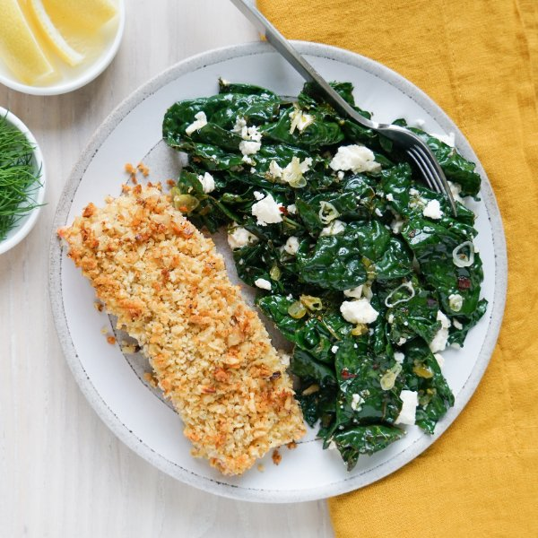

Walnut Crusted Salmon with Greek-Style Kale, Dill & Feta Sauté

Prep Time
35 min
Nutrition (per serving)
681.9 kcalCalories
47 gProtein
19.4 gCarbs
47.5 gFat
Full nutrition table
| Calories | 681.9 kcal |
| Total fat | 47.5 g |
| Saturated fat | 10.6 g |
| Trans fat | 0.4 g |
| Cholesterol | 108.5 mg |
| Sodium | 445.5 mg |
| Carbohydrates | 19.4 g |
| Fiber | 3.7 g |
| Sugars | 4.4 g |
| Protein | 47 g |
| Potassium | 1308.7 mg |
| Calcium | 367.6 mg |
| Iron | 4.1 mg |
| Vitamin A | 1164.5 IU |
| Vitamin C | 118.3 mg |
| Vitamin D | 620 IU |
Cookware
Ingredients
- 1 (4 oz) pkgcrumbled feta cheese
- 1 small bunchfresh dill
- 1 small bunchgreen onions (scallions)
- 2 buncheskale
- 2lemons
- 1 ½ lbsalmon fillet
- ½ cupwalnuts
- black pepper
- crushed red pepper
- extra virgin olive oil
- mayonnaise
- panko bread crumbs
- salt
Steps
- Preheat oven to 425°F. Coat a baking sheet pan with a thin layer of oil.2 tsp extra virgin olive oil
- Wash and dry the fresh produce.2 lemons
1 small bunch fresh dill
2 bunches kale
1 small bunch green onions (scallions) - Mince walnuts. Place in a small bowl along with bread crumbs, oil, and salt; stir to combine the coating.½ cup walnuts
⅓ cup panko bread crumbs
4 tsp extra virgin olive oil
⅛ tsp salt - Pat salmon dry with paper towels and place, skin-side down, on the baking sheet; season the top side with salt and pepper. Spread the fish with mayo, then sprinkle evenly with the coating, pressing gently to adhere. (Reserve bowl for later use.)1 ½ lb salmon fillet
½ tsp salt
¼ tsp black pepper
3 tbsp mayonnaise - Place baking sheet in the oven (it doesn't have to be fully heated) and roast until salmon is cooked through, 10-12 minutes. Remove from oven.
- Meanwhile, juice one lemon into the reserved bowl. Cut remaining lemon into wedges and set aside for serving.
- Shave dill leaves off the stems; discard stems and mince the leaves. Add to the bowl with the lemon juice and set aside.
- Fold kale leaves in half lengthwise and slice off the stems. Chop or tear leaves into bite-sized pieces and place in a medium bowl.
- Preheat a large skillet over medium-high heat.
- While the skillet heats up, trim and thinly slice green onions crosswise. Add to the bowl with the kale.
- Once the skillet is hot, add oil and swirl to coat the bottom. Add kale and green onions to the skillet in handfuls, waiting for kale to wilt slightly before adding the next handful. Cook, stirring frequently, until the kale is tender, 1-2 minutes.2 tbsp extra virgin olive oil
- Add lemon juice, dill, feta, crushed red pepper, and salt to the skillet with the kale. Stir to combine and remove from heat.1 (4 oz) pkg crumbled feta cheese
½ tsp crushed red pepper
¼ tsp salt - To serve, divide salmon and kale between plates, then squeeze lemon over top. Enjoy!